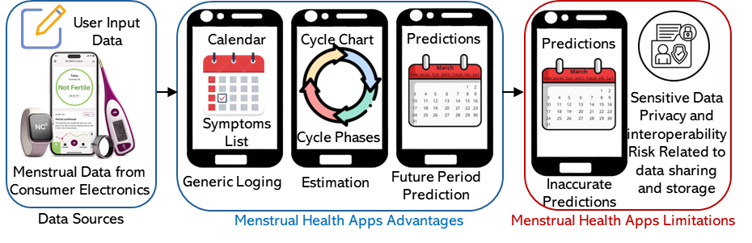
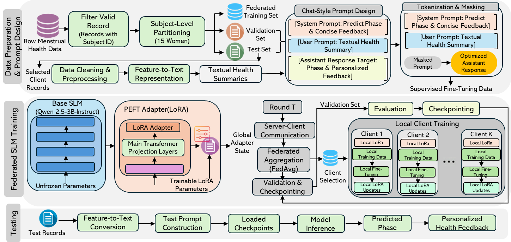
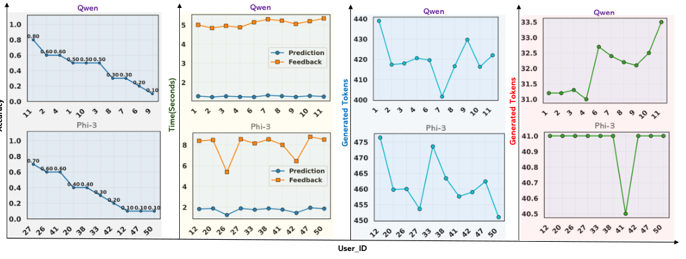

Limited interpretation
Users receive outputs without clear links to symptoms, hormones, or lifestyle signals.
A privacy-preserving framework that predicts menstrual cycle phases and generates feature-grounded feedback using federated SLMs trained with LoRA adapters.
Hormone-related changes and symptoms suggest luteal-phase patterns. Fatigue and bloating may be contributing to discomfort.
Existing systems provide useful logging, cycle estimation, and period prediction, but often lack personalized feedback and raise privacy concerns when sensitive reproductive health data is processed centrally.

Users receive outputs without clear links to symptoms, hormones, or lifestyle signals.
Centralized pipelines can expose hormonal, physiological, and self-reported data.
Women’s health patterns vary by individual, requiring user-centered learning.
Transforms hormonal, symptom, and lifestyle records into natural-language health summaries.
Trains Qwen2.5-3B and Phi-3-mini with LoRA adapters across participant-level clients.
Generates concise, phase-specific feedback grounded in each record’s features.
Measures accuracy, F1, latency, RAM, CPU, and GPU usage for practical deployment analysis.
The system keeps participant data local, converts each record into a chat-style prompt, fine-tunes only lightweight LoRA parameters, and aggregates adapter updates through FedAvg.


Evaluate on larger and more representative women’s health datasets.
Add secure aggregation and differential privacy to protect model updates.
Use expert review and user-centered studies to assess safety, usefulness, and readability.